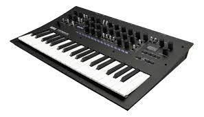

¡trap argentino!
¿que es?
¡trap! de seguro lo has escuchado, el trap es un subgenero musical del hip hop, en america latina el trap se divide en 2, trap latino y trap español, aqui vamos hablar del trap español en argentina.
¿de que trata el trap?
la temática del trap se aborda en temas que van desde ajustes de cuentas, problemas legales y venta de drogas en general, mucho crack, droga dura y vida de suburbio.
Origen del trap
Duki fue el primero que saco una canción argentina que se puede registrar de este género. Motivados por Duki, fueron varios los artistas que empezaron a aprovechar la exposición que tenían para comenzar a coquetear con la música: Lit Killah, Ecko, incluso el mismo Paulo Londra, por nombrar a algunos

Instrumentos mas usados en el trap
Instrumentos mas comunes en el trap: Secuenciador, sampler, caja de ritmos, sintetizador, bajo, teclado, viento metal y Rapeo.

Mayores exponentes del trap
Duki, Cazzu, Nicki Nicole, Ecko y Neo Pistea son algunos de los traperos argentinos que causan furor entre los centennials. Sus videos en YouTube acumulan más de 100 millones de visitas y sus giras alcanzan destinos como España, México y Colombia